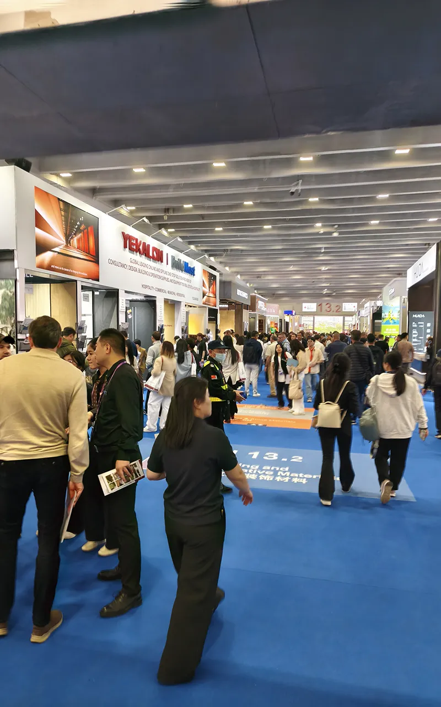

The Canton Fair has 50,000+ booths. I help you cut through the chaos — pre-fair research, on-site visits, factory verification, and follow-up coordination. Whether you attend in person or need someone on the ground, I make trade shows work for your sourcing goals.

I walked the Canton Fair halls myself — now I help you do the same, smarter
50,000 booths. 1.18 million square meters. Three days minimum to see even one phase. Most buyers spend their time lost, collecting business cards from trading companies, and going home with nothing actionable.
I research suppliers by product category before you arrive, create a targeted booth list, and prepare questions tailored to your specific needs. No more wandering blind.
Real factory or trading company? I can tell the difference in minutes. I ask the right questions, photograph products, and verify what suppliers claim on the spot.
Within 48 hours of visiting booths, you receive a structured report with booth photos, product details, pricing notes, factory verification status, and recommended next steps.
Collecting cards is easy. Converting them into verified suppliers is hard. I coordinate factory visits, sample requests, and initial negotiations after the fair.
Whether you're attending the fair yourself or need someone on the ground, there's a service model that fits.
You visit the Canton Fair yourself. I research suppliers beforehand, create a target list of booths, prepare questions to ask, and brief you on red flags to watch for. You do the walking; I do the homework.
Can't travel to Guangzhou? I visit booths on your behalf, photograph products, collect supplier information, ask verification questions, and send you detailed reports within 48 hours. You get the fair experience without the flight.
We coordinate your visit together. I meet you at the fair, guide you through targeted halls, introduce you to verified suppliers, translate conversations, and handle negotiations in real time.
The Canton Fair is the biggest, but China has dozens of specialized trade shows throughout the year. We cover the ones that matter for your product category.
The world's largest trade show. Three phases covering electronics, consumer goods, and textiles. Held in April and October.
The world's largest small commodity market. Year-round trading center plus annual import exhibition. Great for general merchandise.
Consumer electronics and trade show in Hong Kong. More buyer-friendly environment, stricter exhibitor vetting, popular with Amazon sellers.
Foshan hosts multiple furniture exhibitions throughout the year. Critical for furniture sourcing — many factories are within an hour of these shows.
Tell me what you're sourcing and when you're planning to visit. I'll help you prepare, or visit booths on your behalf.